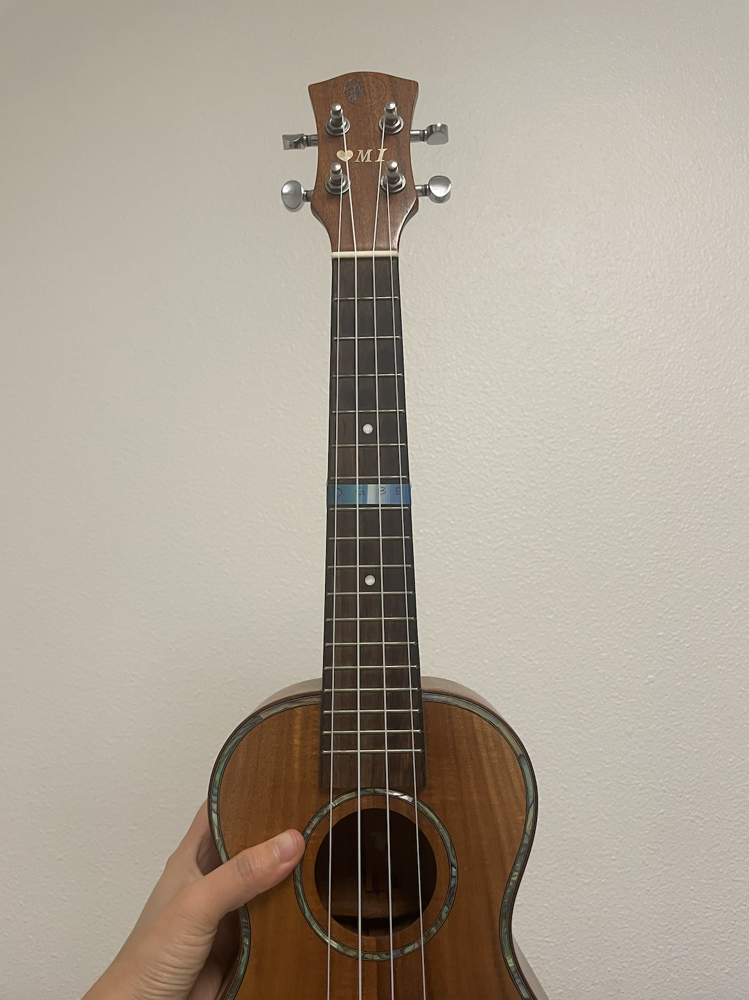

|
Reading Response #1 to Artful Design • Chapter 1: “Design Is ______” Samantha Liu 10/1/24 Music 256A / CS476a, Stanford University From this week's reading, I'd like to respond to Artful Design Principle 1.5, which states:
—I thought about the different ways how this is the case. For one, this applies to the nature that what we design interacts with people, including ourselves. For example in interface design, it is the interactions, rather than the results of those, that designers spend their time on. In fact, interface design can be thought of an end in itself. In the pencil case metaphor, the interface would be the "zipping the zipper", while the result of the interactions would be "closing the pencil case". I think many people who are obsessed with fidgeting their fingers can agree that the feeling of the interactions, instead of their results, is what drives us to interact in the first place. I also loved the notion of the medium being the message because I think this emphasizes the process of designing over the end product. I have tried to explore this in my music -- often, I find the act of writing a song to be more important than what the song turns out to be. In that sense, I am prioritizing the experience of me, the designer, over the experience of the audience of my design. This selfish but honest idea makes me wonder if designer should invest more time on designing the interface that they use to design. Wouldn't that make the process (instead of the product) more enjoyable? In reality, not a lot of animators will work on the codebase of Unity, and not a lot of composers will create a new instrument. On one hand, everyone has to use tools that they didn't create in their creative process, and on the other, tools are created by people who are not necessarily their most frequent users. The gap here is interesting to me; how can we design tools without knowing the extent to which they will be used, and how can we adapt tools that weren't necessarily made for our exact purpose? I think there can be something artful in this gap of tools and how we use them, just like how there is always a fun twist when a medium is not used for the message that people expect. In this sense, artful design is like the surprise that people experience when they learn that a thing has more to it than its function or form. Thing 1: Loofah I found the loofah in my bathroom to be beautiful. I think this has lot to do with how random its structure is -- the strands all stretch out by a random amount and this makes the whole loofah look irregularly shaped. However, what is interesting is that the loofah was probably constructed in some predictable way. It is the utilization of its function over time that have it a more and more unique form. Another aspect of the Loofah is that it looks different from a close distance than from afar because of the holes in the threads. I like the details that only present themselves when I look closely, and does not interfere with the overall aesthetics of the object. This makes it a nice addition to the shower -- when I do not need to use it, the loofah is just "a blue ball in the corner", but when I do use it, the holes are obviously critical.
Thing 2: Ukulele fret dot By "fret dot", I mean the dots on the fretboard that mark the fifth, seventh, and tenth frets. This is probably the most inconspicuous part of my ukulele, but to me, it changes the design greatly. I remember holding a ukulele for the first time, learning about all the different parts, and looking at the dots confused. They clearly served a function, since they were so obvious to the eye; but they were not mentioned at any point during my first lesson. As time went on, I became appreciative of their function, but the idea that they are not useful until I know how to play a guitar well (when I move to the higher fret positions) is fascinating to me. Too often, a useful tool has too many complex parts that make a new user feel intimidated. The fret dots, on the other hand, are almost an invitation for the curious. They do not hinder the usage of the ukulele in any way by being a mere visual element, but they are immensely helpful as you become more familiar with the instrument.
Thing 3: Emojis The function of emojis is clearly to give people a tool for expressing their emotions more easily. However, its form is quite constrictive. I use them all the time, yet I still think of the most expressive ways of describing my emotion as words, music, or something completely intangible. As I am often stuck choosing between two emojis to send in a text, I feel that part of the message has been masked by using a particular emoji. Also, emojis purposefully over-generalize us. Considering how there were only bright-yellow-faces in the beginning, it is clear that the attempt of emojis to represent something across different identities is not always what the users woud like. Even then, I want to praise the team of artists who work on emojis for doing a pretty good job. In fact, I believe emojis have caused us to have new emotions. Take üòÇ for example. This seemingly contradictory combination of a laugh and tears can represent many different things depending on who you ask, but personally, I have a specific emotion which I would feel, and then recognize to be üòÇ. When we talk about designs that understand us, this is a powerful case for when a design changes our understanding of ourselves.
Guerrilla design: Ukulele fret stress strip I wanted to design something that's like an augmentation of the fret dots. I have some anti-stress texture strips that I stick onto my phone and laptop, so I decided to write down the notes on the seventh fret of all four strings on the strip and use that as a marker. This is a useful feature as it helps with the next step in my uke journey-- fingerstyle playing. However, I realized that I was also taking away a little function, because I will no longer be able to run my finger on the strip like how it is supposed to be used. Aesthetically, I would say this is worth it; I have now added a bit of my favorite color onto my favorite instrument. Just like the fret dots, the markings are hard to notice unless you are playing the ukulele, and from afar it just looks like a decoration. Functionally, it would be easier to read if I had dark pen marks on a lighter material, but just because it is more pleasing to look at, I believe that I will use this strip more often -- and hopefully it will teach me the notes on the fret soon. 
|